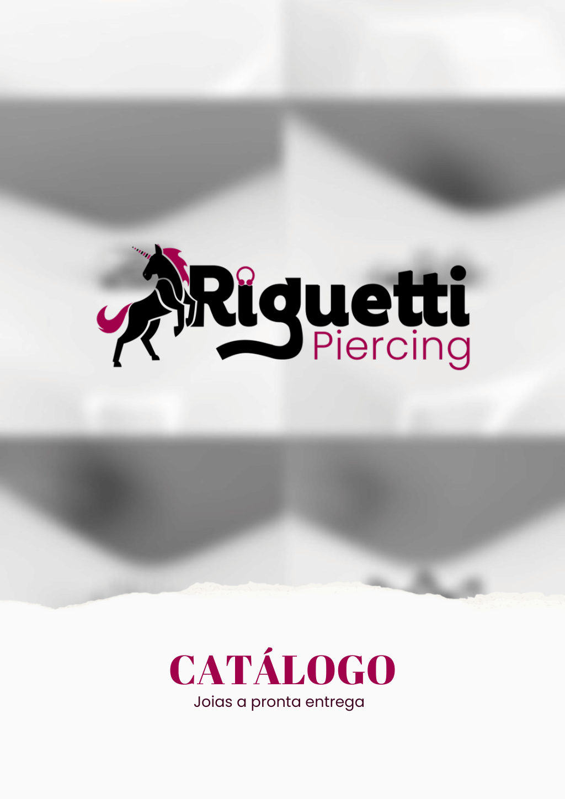
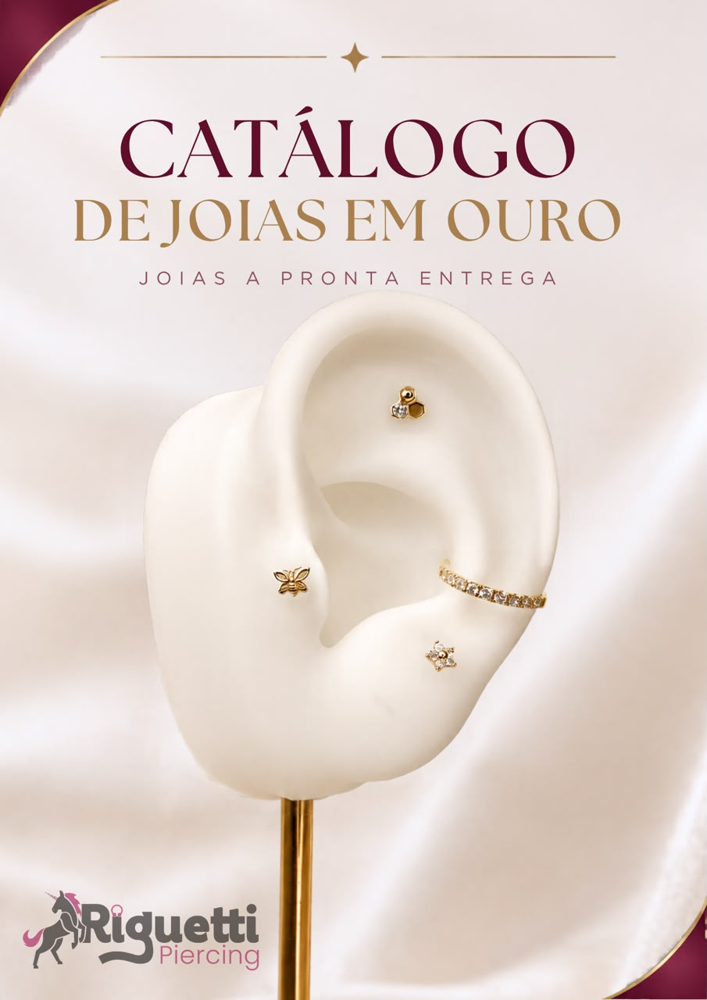

Agulha, nunca pistola
A agulha corta e abre caminho para a joia. A pistola esmaga o tecido, não pode ser esterilizada de verdade e deixa a cicatrização muito mais difícil — inclusive no lóbulo.

AgendarBody piercing em Goiânia com a Bia Riguetti, body piercer desde 2019. Toque em um ponto da orelha e veja quanto tempo ele leva pra cicatrizar, qual joia entra primeiro e o que esperar da sessão.
5,0 400+ avaliações no GoogleToque nos pontos
Nenhum ponto selecionado ainda.
Perfuração é procedimento, não é acessório de loja. Três coisas não são negociáveis no meu atendimento.
A agulha corta e abre caminho para a joia. A pistola esmaga o tecido, não pode ser esterilizada de verdade e deixa a cicatrização muito mais difícil — inclusive no lóbulo.
Instrumental esterilizado em autoclave, luvas, agulha e campo de uso único, abertos na sua frente. O que tocou em você não toca em mais ninguém.
Toda perfuração sai com joia de titânio ASTM F136, o mesmo grau usado em implante dentro do corpo. Não trabalho com aço em perfuração: material barato libera níquel, irrita e é a causa mais comum de rejeição.
Pelo WhatsApp. Me diga o ponto que você pensou e, se der, mande uma foto da região. Tem perfuração que depende do formato da sua anatomia — é melhor descobrir isso antes de você sair de casa.
Desenho a marcação, você confere no espelho e só seguimos quando estiver do jeito que você quer. Nada de agulha antes do seu sim.
Agulha estéril aberta na sua frente, um movimento só, alguns segundos. A joia inicial entra na sequência.
Te explico a higiene, o que evitar e quando voltar pra trocar a joia. Qualquer dúvida depois, me chama — acompanhamento faz parte.
Toda perfuração é feita com titânio grau implante, nas medidas que cabem em cada ponto. Tenho também um catálogo de peças em ouro. Pronta entrega no estúdio e envio para todo o Brasil — se você não é de Goiânia, me chama que eu te ajudo a acertar a medida antes de fechar.

Catálogo 2026 Titânio Grau implante, com preços e medidas. Abrir o catálogo
Joias em Ouro Peças em ouro, com preços e medidas. Abrir o catálogoSepto, daith e hélix.
A joia inicial da maioria dos pontos.
Umbigo, rook e Sobrancelha.
Língua, transversal e mamilo.
Argola que não fecha o círculo.
Microdermal, em áreas planas.
Mamilo e genital fazem parte do meu trabalho, com o mesmo protocolo de esterilização de qualquer outro ponto.
Conversar em particularAcompanhamento não é cortesia, é parte do serviço. Você sai com o meu WhatsApp e pode me chamar em qualquer momento da cicatrização — pra tirar dúvida, mandar foto ou ajustar a joia.
Melhor bodypiercing de Goiânia. Atenciosa até com o período de cicatrização, cuidadosa com a higienização, paciente com qualquer questionamento, atendimento virtual e presencial 10/10, explicação dos cuidados excelentes. Enfim, única profissional que confio cem por cento.
A Bia foi muito atenciosa e paciente para me dar as informações que eu precisava pelo WhatsApp. Foi pontual no atendimento. O procedimento de perfuração foi tranquilo, com materiais de proteção, tudo higienizado. As orientações do pós procedimento foram ótimas e ela me deu toda assistência que precisei. Voltarei em breve!
A moça é super simpática e profissional, falou comigo durante cada parte do processo e me deixou bem confortável! Os furos do piercing são recentes e parecem estarem cicatrizando super bem, ela fez um trabalho ótimo!
Atendimento excelente, além de ser super simpática. Local totalmente higienizado, ambiente visualmente agradável e harmônico. Joia maravilhosa e de uma qualidade incrível: salvou minha orelha de algo que estava acontecendo por causa da joia antiga, mesmo com os cuidados.
Minha experiência com a Bia foi sem dúvidas a melhor que já tive com body piercer até hoje. Muito cuidadosa e técnica, além de se preocupar em tirar todas as minhas dúvidas e me orientar com o maior cuidado antes, durante e depois da perfuração. Piercing é artigo de luxo, e a escolha de uma boa profissional é indispensável.
Super qualidade no atendimento, estúdio muito lindinho e asséptico! Adorei, e com certeza a Bia vai ser sempre minha opção de bodypiercer aqui em Goiânia.
Arraste para o lado
Sua forma de se expressar é original, e os piercings refletem sua personalidade.
Por alguns segundos. A agulha é afiada e o movimento é único, então o que mais incomoda costuma ser a expectativa. Depois é mais uma ardencia do que uma dor — e passa em poucas horas.
Lavagem com sabonete líquido neutro, compressa com soro fisiológico duas vezes por dia e secagem com gaze. Nada de álcool, água oxigenada, pomada ou ficar girando a joia com a mão. Você sai daqui com o passo a passo escrito.
Só depois de cicatrizado — o prazo muda de ponto pra ponto e está no mapa aqui de cima. Trocar antes é o jeito mais rápido de inflamar ou fechar o furo.
Nas primeiras semanas, não. Água parada, areia e suor em contato com um furo aberto são o caminho curto pra uma infecção. Se você tem viagem ou competição marcada, me avise que a gente escolhe a melhor data.
Sim, com o responsável legal presente na sessão e documento com foto dos dois.
É necessario uma avalização PRESENCIAL, me chama no WhatsApp que marcamos a data e a hora. Muita irritação é joia errada, medida curta ou material barato, e isso tem conserto. Se for infecção, eu te oriento e indico procurar atendimento médico.
Atendo com hora marcada, um cliente por vez. Me chama no WhatsApp com o ponto que você quer e eu te passo valor e os horários livres.
Chamar no WhatsApp